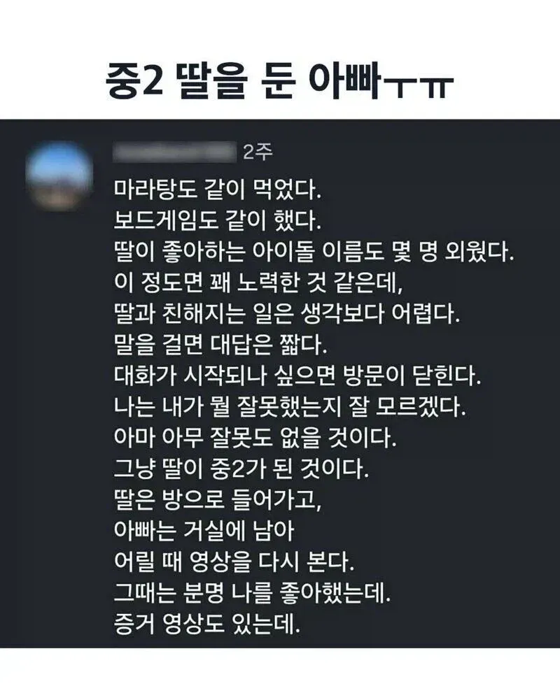
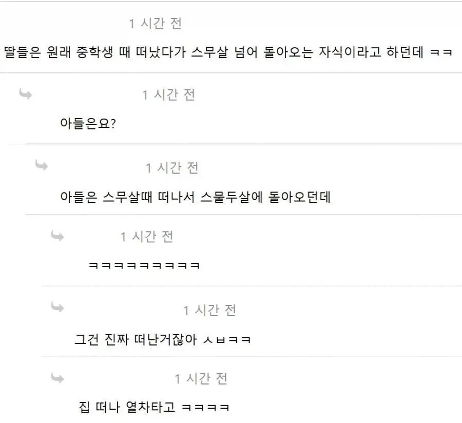

ㅋㅋㅋㅋㅋ받아들여라 뭔가 좋은아빠같네
독립하는걸 연습하는 시기인데
그걸 막으면 40살까지 먹여살려야함 ㅋㅋㅋ
뭐 좀 여자가 기본적으로 여린건 이해해도
왜 20살이지? 이후부터는 로그적으로 아줌마가 되어가는건가
걍 그쯤부터 호르몬 진정되면서 애들이 이유없이 틱틱대는게 적어진다는 소리임.
저 증거도 있는데가 너무 웃겨 실제로도 재밌는 사람일 듯. 근데 약간 중2 딸이 기겁하는 방향으로 ㅋㅋㅋ
ㅋㅋㅋㅋㅋㅋㅋㅋㅋ 막 아빠조아~ 이러는 영상 아닐까
아들은 때되면 지 여자 찾아서 떠나는거고
딸은 중학교 때 나간다기 보다는 그때부터 아빠를 무시하다가 남자친구 생길때 쯤 혹은 지가 경제활동을 시작할때 쯤부터
아빠를 다시 돌아보기 시작하는거겠지
세상에 지 아빠만큼 지한테 잘해주는 남자는 별로 없으니까...
물론 개쓰레기 새끼들은 별개고
하...나도 진짜 우리딸 저러면 진짜 세상 무너질거 같다...지금 6살이라 중딩때 저러면 이제 몇년 안남은건데ㅠㅠ